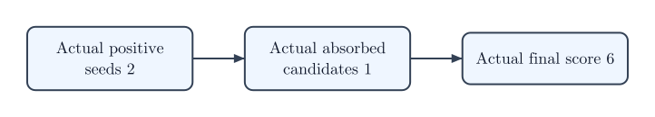
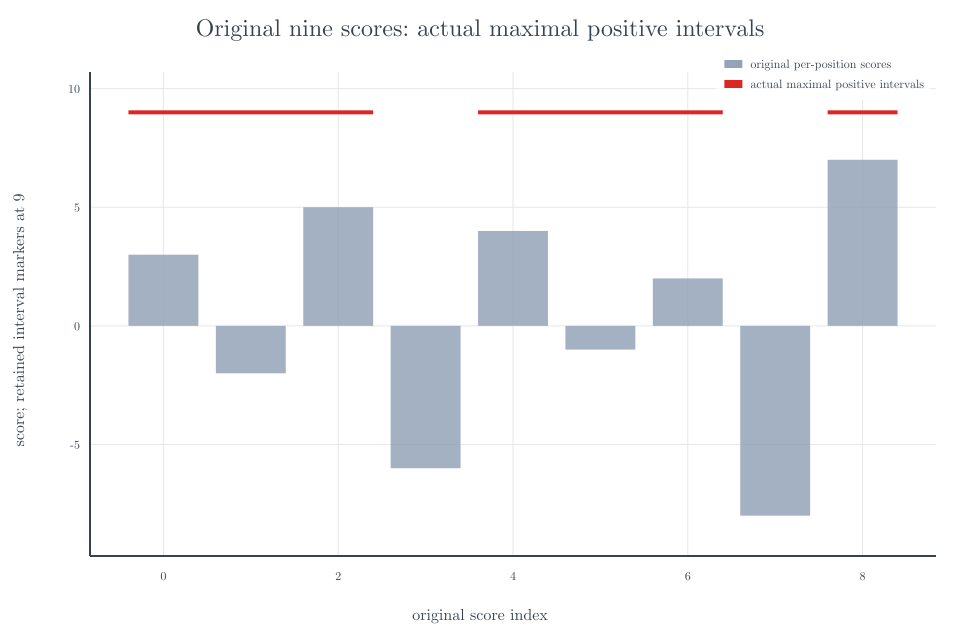
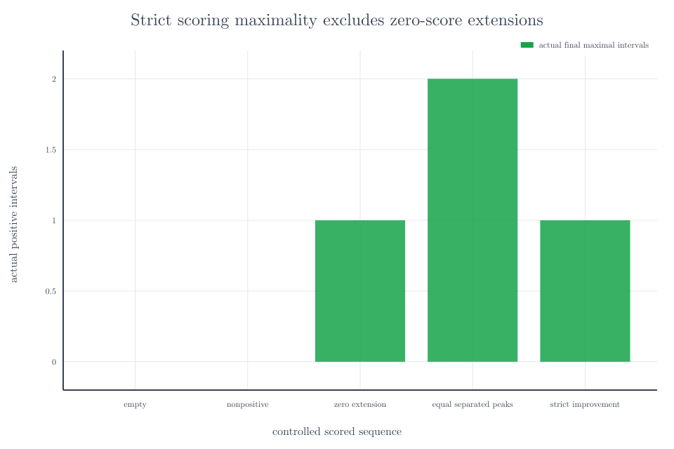
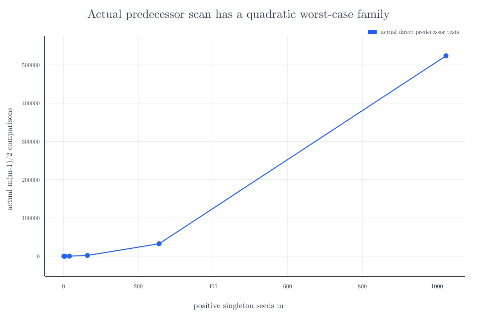

Maximal scoring subsequences: actual candidate integration and honest predecessor work
Abstract
Find positive-scoring contiguous intervals that strictly improve on their proper subintervals and are not contained in longer such intervals. A scored sequence can contain several disjoint positive signal islands. Native candidate histories now expose the actual integrations of the original nine scores. The report separates the Ruzzo-Tompa maximality idea from the direct predecessor scan used by this implementation.
Mechanism and mathematical scope
Let P_j=sum_{i<j} x_i. An interval [a,b) has score P_b-P_a. A strictly maximal scoring interval improves on each proper subinterval and is not contained in a longer interval with that property. Strictness excludes zero-score extensions. Each positive score seeds a candidate with endpoint prefixes L,R. The native list searches backward for the rightmost prior candidate with smaller L, then merges that candidate and every following list entry only when its R is also smaller. Final survivors give the positive maximal intervals. The original paper has a linear-time linked algorithm. This implementation uses a direct backward scan and can make
predecessor tests on m positive seeds separated by -1. The report measures that actual quadratic path instead of repeating the old linear-time claim.
A tiny actual producing history
The table and native concept diagram read the same producing execution. Every block below is a complete editable C++ program.
#include <dm/dm.hpp>
int main() {
namespace a = dm::algorithms;
namespace g = dm::graphics;
std::filesystem::create_directories("build");
auto t = a::ruzzo_tompa_trace({3, -2, 5});
std::print("| actual input event | prefix before | prefix after | seeded | comparisons | absorbed | " "candidate count |\n| ---: | ---: | ---: | --- | ---: | ---: | ---: |\n");
for (const auto &s : t.steps)
std::print("| {} | {} | {} | {} | {} | {} | {} |\n", s.input_index,
s.prefix_before, s.prefix_after, s.seeded, s.comparisons,
s.absorbed, s.candidates.size());
g::Diagram d(48, 1100);
d.node("n0", {0, 0},
std::format("Actual positive seeds {}", t.positive_seeds));
d.node("n1", {5, 0},
std::format("Actual absorbed candidates {}", t.absorbed));
d.node("n2", {10, 0},
std::format("Actual final score {}", t.segments[0].score));
d.edge("n0", "n1").edge("n1", "n2");
d.save_svg("build/ruzzo_tompa_tiny.svg");
}| actual input event | prefix before | prefix after | seeded | comparisons | absorbed | candidate count |
|---|---|---|---|---|---|---|
| 0 | 0 | 3 | true | 0 | 0 | 1 |
| 1 | 3 | 1 | false | 0 | 0 | 1 |
| 2 | 1 | 6 | true | 2 | 1 | 1 |

The retained original experiment
#include <dm/dm.hpp>
int main() {
namespace a = dm::algorithms;
namespace g = dm::graphics;
std::filesystem::create_directories("build");
const std::vector<double> scores{3, -2, 5, -6, 4, -1, 2, -8, 7};
auto t = a::ruzzo_tompa_trace(scores);
std::print("Original scores: {}.\n\n| actual final begin | actual final end | actual score |\n| ---: | " "---: | ---: |\n",
scores);
auto p = g::RPlot::create();
std::vector<double> x;
for (std::size_t i = 0; i < scores.size(); ++i)
x.push_back(i);
p.bars(x, scores, "original per-position scores", {148, 163, 184}, .8);
bool first_interval = true;
for (const auto &s : t.segments) {
std::print("| {} | {} | {} |\n", s.begin, s.end, s.score);
p.lines({double(s.begin) - .4, double(s.end) - .6}, {9, 9},
first_interval ? "actual maximal positive intervals" : "",
{220, 38, 38}, 4);
first_interval = false;
}
std::print("Actual scan comparisons {}, absorbed entries {}, peak candidates {}.\n",
t.comparisons, t.absorbed, t.peak_candidates);
p.title("Original nine scores: actual maximal positive intervals").x_label(
"original score index").y_label("score; retained interval markers at 9");
p.save_svg("build/ruzzo_tompa_original.svg");
}Original scores: [3, -2, 5, -6, 4, -1, 2, -8, 7].
| actual final begin | actual final end | actual score |
|---|---|---|
| 0 | 3 | 6 |
| 4 | 7 | 5 |
| 8 | 9 | 7 |
Actual scan comparisons 8, absorbed entries 2, peak candidates 3.

Explicit controls
#include <dm/dm.hpp>
int main() {
namespace a = dm::algorithms;
namespace g = dm::graphics;
std::filesystem::create_directories("build");
const std::vector<std::vector<double>> cases{{}, {-3, 0, -1}, {1, 0},
{1, -1, 1}, {2, -1, 2}};
std::vector<double> x, y;
std::vector<std::string> labels{"empty", "nonpositive", "zero extension",
"equal separated peaks",
"strict improvement"};
std::print("| control | actual intervals | actual positive seeds |\n| --- | ---: | ---: |\n");
for (std::size_t i = 0; i < cases.size(); ++i) {
auto t = a::ruzzo_tompa_run(cases[i]);
std::print("| {} | {} | {} |\n", labels[i], t.segments.size(),
t.positive_seeds);
x.push_back(i);
y.push_back(t.segments.size());
}
bool invalid = false;
try {
a::ruzzo_tompa({std::numeric_limits<double>::quiet_NaN()});
} catch (const std::invalid_argument &) {
invalid = true;
}
std::print("Nonfinite score rejected: {}.\n", invalid);
if (!invalid)
return 1;
auto p = g::RPlot::create();
p.bars(x, y, "actual final maximal intervals", {22, 163, 74}, .8).x_ticks(
x, labels).title("Strict scoring maximality excludes zero-score extensions").x_label("controlled scored sequence").y_label("actual positive intervals");
p.save_svg("build/ruzzo_tompa_controls.svg");
}| control | actual intervals | actual positive seeds |
|---|---|---|
| empty | 0 | 0 |
| nonpositive | 0 | 0 |
| zero extension | 1 | 1 |
| equal separated peaks | 2 | 2 |
| strict improvement | 1 | 2 |
Nonfinite score rejected: true.

Actual selected work and sensitivity
#include <dm/dm.hpp>
int main() {
namespace a = dm::algorithms;
namespace g = dm::graphics;
std::filesystem::create_directories("build");
std::vector<double> x, y;
std::print("| positive seeds m | actual input values | actual predecessor comparisons | actual absorbed " "| final intervals |\n| ---: | ---: | ---: | ---: | ---: |\n");
for (std::size_t m : {1, 4, 16, 64, 256, 1024}) {
auto t = a::ruzzo_tompa_run(a::ruzzo_alternating_scores(m));
std::print("| {} | {} | {} | {} | {} |\n", m, t.values, t.comparisons,
t.absorbed, t.segments.size());
x.push_back(m);
y.push_back(t.comparisons);
}
auto p = g::RPlot::create();
p.lines(x, y, "actual direct predecessor tests", {37, 99, 235}).points(
x, y, {37, 99, 235}, 5).title("Actual predecessor scan has a quadratic worst-case family").x_label("positive singleton seeds m").y_label("actual m(m-1)/2 comparisons");
p.save_svg("build/ruzzo_tompa_work.svg");
}| positive seeds m | actual input values | actual predecessor comparisons | actual absorbed | final intervals |
|---|---|---|---|---|
| 1 | 1 | 0 | 0 | 1 |
| 4 | 7 | 6 | 0 | 4 |
| 16 | 31 | 120 | 0 | 16 |
| 64 | 127 | 2016 | 0 | 64 |
| 256 | 511 | 32640 | 0 | 256 |
| 1024 | 2047 | 523776 | 0 | 1024 |

API and interpretation
Candidate lists during a trace are intermediate states, not final maximality certificates. The direct predecessor search is quadratic in the worst case; candidate removals themselves are linear in the number of seeds. Widened prefix scores are floating arithmetic, not exact-real sums; nonfinite inputs, unrepresentable outputs and nonzero increments lost at prefix precision reject explicitly. Complete-list histories can also be quadratic.
Reusable producers, fixtures and histories live in the canonical C++ library. Captured records own their values and do not come from a separate report replay. Selected counters and record/scalar policies are specified at their API boundaries; they are not peak-byte or wall-time budgets. Synthetic structural inputs are controlled fixtures for these mechanisms.
References
Verification: 133 scoped native cases;20 directly instrumented ASan/UBSan
cases;85 executable public examples;343/343 full-file definitions;10 hovers;1263
independent records/220175 checks;frozen compatibility across all ten
families;11 checkout/installed standalone headers and linked consumer;40
executed programs and40 inspected figures with both exports. Receipts:
build/mepml-conversion/batch-324-333/.